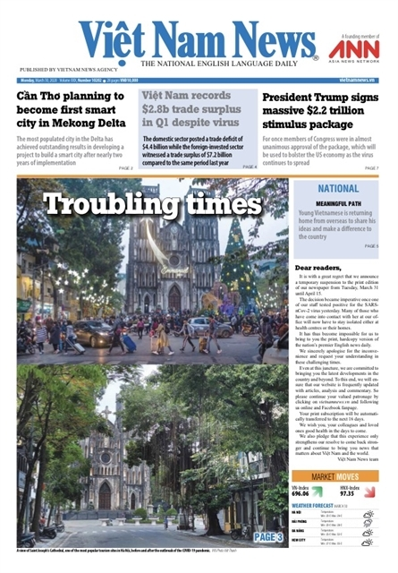

Triển lãm tri ân
IN DẤU
Chào mừng bạn đến với triển lãm In Dấu, nơi tái hiện hành trình khó khăn của báo in Việt Nam trong thời kỳ COVID-19. Qua những hình ảnh, hiện vật tác nghiệp và tư liệu chân thực, chúng tôi mong muốn khắc họa những khó khăn mà các tòa soạn và phóng viên phải đối mặt trong thời gian dịch bệnh diễn ra.
0 / 11
đã khám phá
Hướng dẫn
Cẩm nang trải nghiệm triển lãm "In Dấu"
- Hướng nhìn: Kéo chuột hoặc vuốt màn hình để xoay nhìn 360 độ.
- Di chuyển bằng chuột: Bấm vào bất kỳ bề mặt nào trong phòng, kể cả sàn và tường, để di đến gần điểm đó.
- Di chuyển bằng bàn phím: Trên máy tính, dùng phím mũi tên hoặc các phím W A S D để đi lại tự do (theo hướng nhìn).
- Mở bảng thông tin hiện vật: Bấm vào hiện vật để bảng thông tin hiển thị.
- Sử dụng bảng hành trình: Sử dụng dropdown Hành trình ở phía trên để nhảy nhanh tới từng điểm dừng.
✦ Lưu ý khác:
- Để có trải nghiệm tốt nhất, hãy truy cập bằng máy tính/máy tính bảng.
- Có thể dùng nút toàn màn hình ở góc dưới phải để mở toàn màn hình.
- Nhạc nền sẽ tự động bật, có thể tắt hoặc bật lại bằng nút ở khung hành trình.

